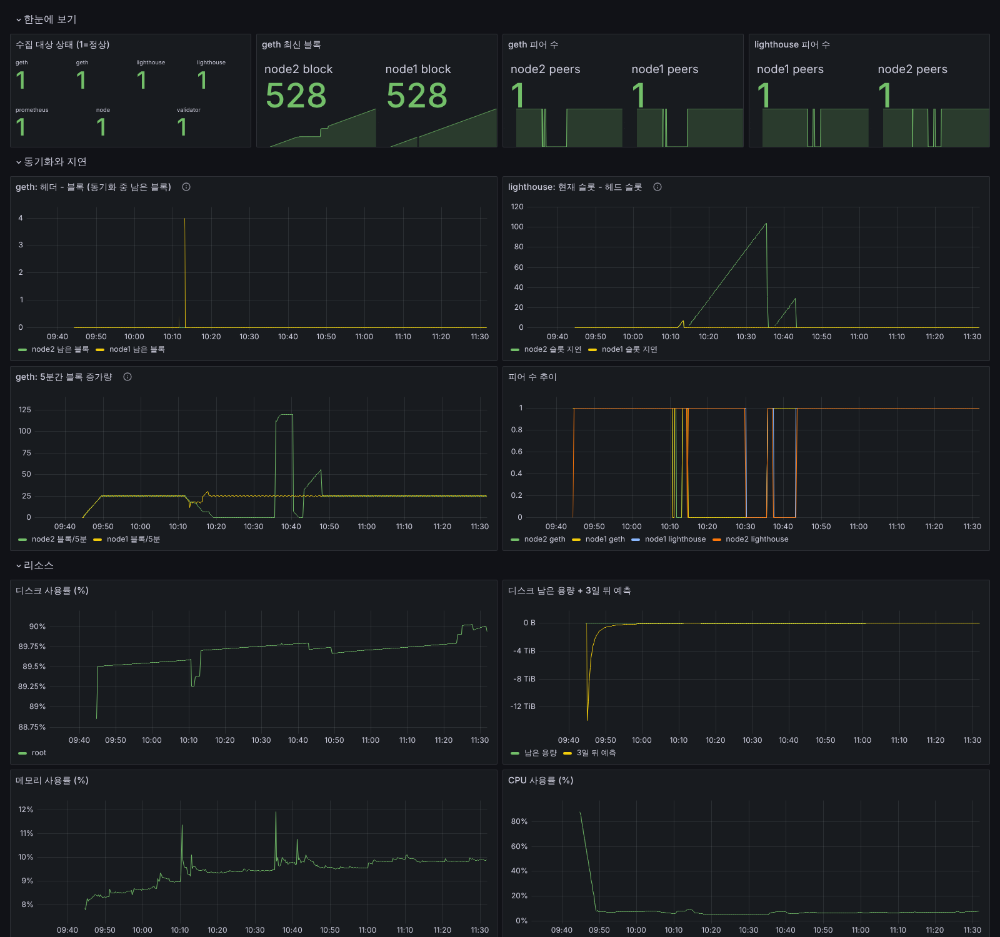
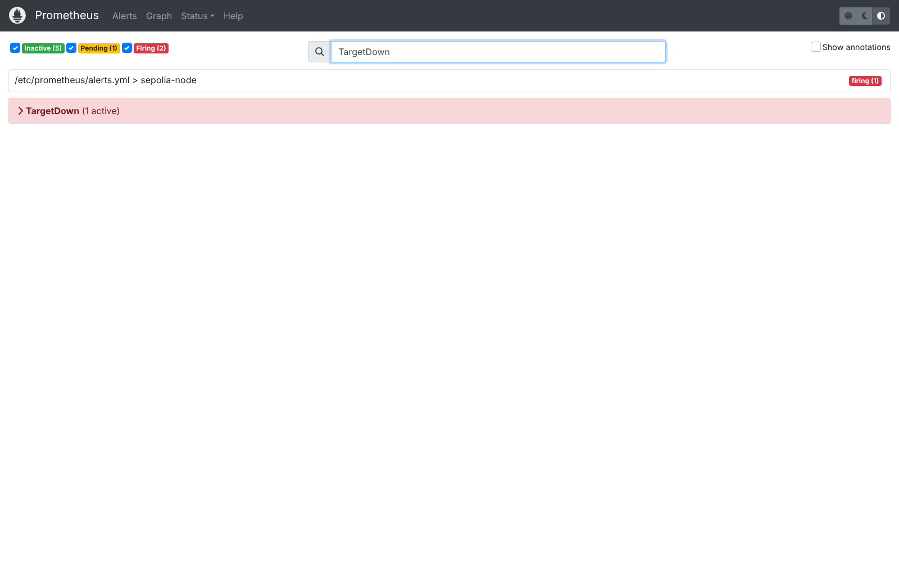
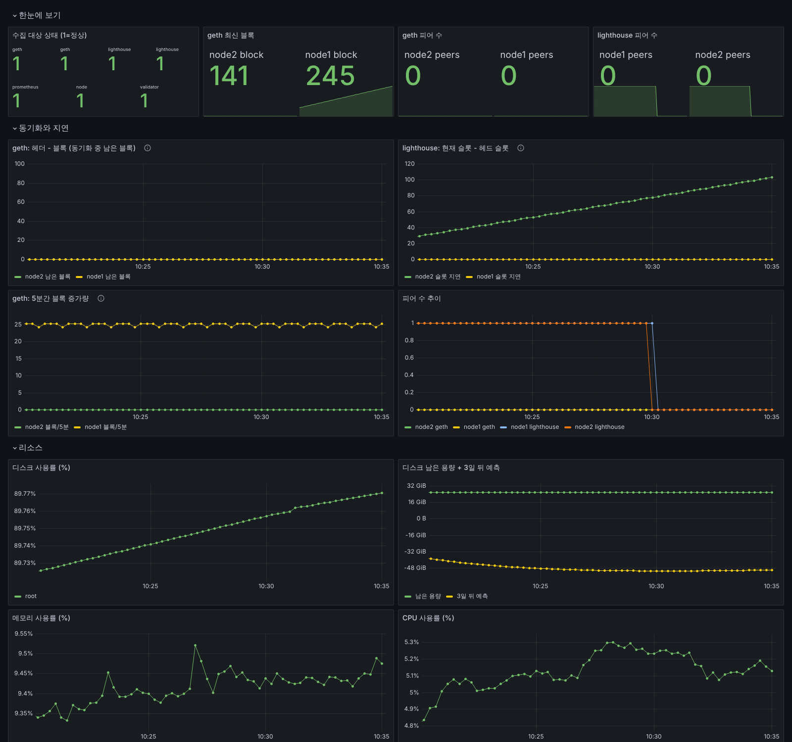
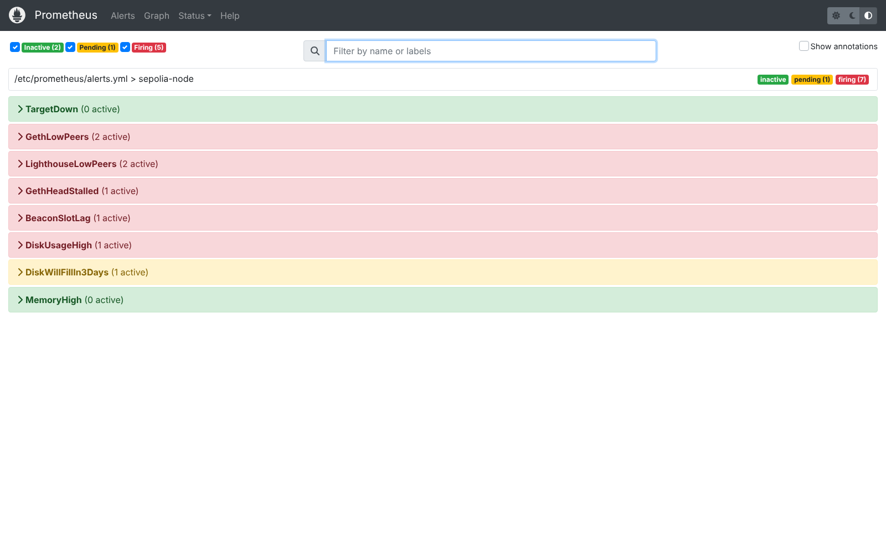
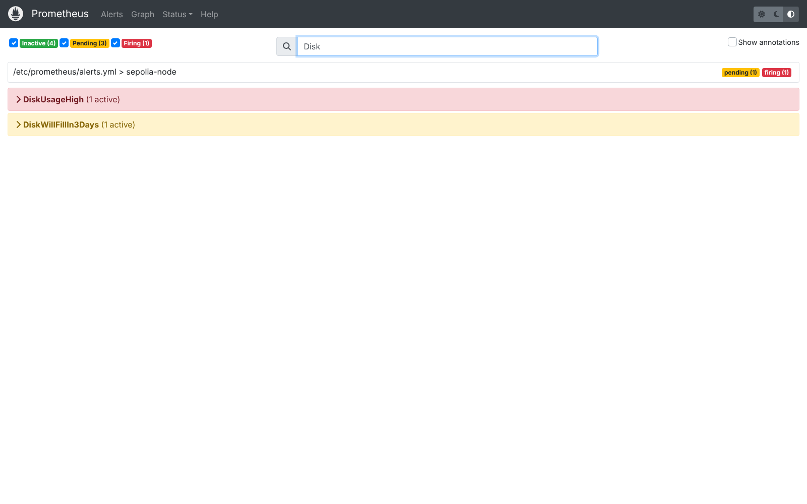

작은 연습용 이더리움 네트워크를 만들어 2시간(09:44~11:31) 동안 돌리면서, 고장 세 가지를 일부러 일으켰습니다. 감시 화면이 문제를 잡아내는지, 원인을 어떻게 찾는지, 다시 정상이 되기까지 얼마나 걸리는지 모두 실제로 재서 적었습니다.
Geth v1.17.8Lighthouse v8.2.3Docker 29.84코어 · 메모리 15GB
먼저 읽어 주세요
이 실습은 Claude가 자기 작업 환경에서 대신 돌린 것입니다. 면접에서 "제가 직접 해 봤다"고 말씀하시면 안 됩니다. 공부 자료로 읽으시고, 같은 실습을 도연 님 PC에서 한 번 돌려 보시면 그때부터 도연 님 경험이 됩니다. 방법은 맨 아래에 있습니다.
한눈에
결과 요약
44초켜고 나서 첫 블록이 만들어지기까지
2.8GB2시간 돌린 뒤 디스크 사용량 (진짜 테스트넷은 1TB 안팎)
3 / 3일부러 낸 고장을 감시 화면이 잡아낸 횟수
4건실습하다가 찾아서 고친 감시 설정의 허점
구성
무엇을 만들었나
진짜 이더리움과 같은 프로그램을 쓰되, 내 컴퓨터 안에서만 도는 작은 네트워크를 만들었습니다. 노드(이더리움에 참여하는 컴퓨터) 두 대를 흉내 냈습니다.
노드 1 · 블록을 만드는 쪽Geth(거래 처리 담당)와 Lighthouse(어느 블록이 맞는지 정하는 담당)가 짝을 이룹니다. 검증자 64개가 12초마다 새 블록을 만듭니다.
노드 2 · 따라가는 쪽블록을 만들지 않고 노드 1에서 받아 따라가기만 합니다. 연결이 끊겼다가 다시 붙는 연습에 씁니다.
감시 도구Prometheus가 15초마다 상태 숫자를 모으고, Grafana가 그래프로 보여 줍니다. 문제가 생기면 알림이 울리도록 규칙 8개를 걸었습니다.

2시간 실습 전체를 담은 감시 화면. 위쪽은 블록 번호와 연결된 상대(피어) 수, 가운데는 뒤처짐 정도, 아래는 디스크·메모리·CPU입니다. 가운데 오른쪽 그래프의 큰 봉우리(10:14~10:35)가 연습 2에서 노드 2를 끊었던 구간이고, 10:12쯤의 작은 튐이 연습 1의 강제 종료입니다.고장 연습 1
프로그램을 갑자기 꺼 보기
블록 6개 유실 후 복구
한 일
노드 1의 Geth를 두 번 껐습니다. 한 번은 정상 재시작(restart), 한 번은 전원을 뽑듯 강제 종료(kill)했습니다.
정상 재시작
3초 만에 다시 떴고 다음 블록이 바로 만들어졌습니다. 잃은 데이터는 없었습니다.
강제 종료
블록 생성이 통째로 멈췄습니다. 블록을 만들려면 Geth가 꼭 필요하기 때문입니다. 71초 뒤 "수집 대상 응답 없음(TargetDown)" 알림이 울렸습니다.
원인 확인
Lighthouse 기록에 "Geth에 연결할 수 없음"이 찍혔고, 상태 조회에서 el_offline: true(실행 프로그램 꺼짐)가 보였습니다.
되살린 뒤
Geth를 다시 켰더니 블록 135가 아니라 129로 되돌아가 있었습니다. 디스크에 미처 저장하지 못한 최근 블록 6개를 잃은 것입니다. 노드 2에게서 다시 받아 복구했고, 다시 켠 지 20초 뒤(끈 지 95초 뒤) 새 블록이 나왔습니다.
다음엔
프로그램은 반드시 정상 종료 절차로 끕니다. 종료할 때 기다려 주는 시간(stop_grace_period)을 설정에 둔 이유입니다. 그리고 잃은 데이터를 다시 받을 상대 노드가 있어야 빨리 복구됩니다.
geth | Loaded most recent local block number=129 ... age=2m30s
geth | WARN Fetching the unknown forkchoice head from network
lighthouse | ERROR Exec engine unable to produce payload
msg: "No payload ID, the engine is likely syncing. This has the potential to cause a missed block proposal."

강제 종료 71초 뒤 울린 TargetDown 알림.
고장 연습 2
노드끼리 연결 끊어 보기
알림 하나가 21분 걸림
한 일
노드 2를 21분 동안 네트워크에서 떼어 냈습니다. 노드 2 안의 두 프로그램끼리는 계속 연결된 채, 바깥 상대와의 연결만 끊었습니다.
보인 증상
노드 2의 블록 번호가 141에서 멈췄고, 그사이 노드 1은 245까지 갔습니다. 노드 2는 104블록 뒤처졌습니다.
되살린 뒤
다시 연결하자 12초 만에 104블록을 모두 따라잡았고, 27초 뒤 알림이 모두 꺼졌습니다.
10:14:07 · 0분노드 2 연결 끊음
10:14:40 · 30초"Geth 피어 부족" 이상 감지 (5분 넘게 계속되면 울리도록 대기)
Lighthouse는 연결이 깔끔하게 끊긴 게 아니라 응답 없이 사라진 경우, 상대가 떠났다고 판단하기까지 시간이 걸립니다. 그동안 약 16분 동안 "피어 수" 숫자가 1로 남아 있었습니다. 따로 다시 시험했을 때는 30초 안에 0이 되었으니, 끊기는 방식에 따라 달라지는 것으로 보입니다(추정).
다음엔
숫자 하나만 믿지 않습니다. 이번에도 "Geth 피어 부족"(5분 30초)과 "뒤처짐"(7분) 알림이 훨씬 먼저 잡아냈습니다. 같은 문제를 여러 방향에서 보는 알림을 함께 걸어 두는 것이 중요합니다.

끊겨 있는 동안의 감시 화면. 가운데 오른쪽 "현재 슬롯 - 헤드 슬롯" 그래프가 노드 2의 뒤처짐입니다.

같은 시각의 알림 화면.
고장 연습 3
디스크가 차는 상황 확인하기
알림 정상 작동
한 일
디스크를 실제로 꽉 채우면 데이터가 망가질 수 있어서, "80% 넘으면 경고" 기준을 잠시 10%로 낮춰 알림이 정말 울리는지 확인했습니다. 그리고 1시간 동안 10분마다 사용량을 쟀습니다.
결과
기준을 낮춘 지 5분 12초 뒤 "디스크 사용률 높음" 알림이 울렸습니다(5분 이상 계속될 때만 울리게 해 두었기 때문). 기준을 원래대로 되돌리고 확인을 마쳤습니다.
헷갈렸던 점
Geth 폴더가 블록이 하나뿐인데도 846MB였습니다. 블록 데이터가 아니라 데이터베이스가 미리 잡아 둔 빈 공간이었습니다. 앞선 실습에서는 재시작 뒤 이 공간이 정리되면서 1MB로 "줄어드는" 것처럼 보이기도 했습니다.
시각
블록
Geth (노드1)
Geth (노드2)
Lighthouse (노드1)
Lighthouse (노드2)
감시 기록
09:44 (시작)
1
846MB
846MB
2MB
2MB
1MB
10:41
279
1,129MB
847MB
233MB
181MB
27MB
10:51
329
1,129MB
847MB
86MB
34MB
31MB
11:01
379
1,129MB
848MB
133MB
81MB
34MB
11:11
429
1,129MB
848MB
176MB
118MB
38MB
11:21
479
1,130MB
848MB
220MB
155MB
46MB
11:31
529
1,412MB
1,130MB
159MB
38MB
50MB
숫자가 고르게 늘지 않습니다. Geth는 한동안 그대로이다가 한 번에 약 282MB씩 뜁니다. 데이터베이스가 공간을 덩어리로 미리 잡아 두기 때문입니다. Lighthouse는 늘었다가 정리 작업 때 확 줄기를 반복합니다. 그래서 10분 간격 측정 몇 번으로 "하루에 얼마씩 는다"를 정하기는 어렵고, 며칠 동안 추세를 봐야 합니다. 2시간 동안 블록 529개를 만들고 전체 약 2.8GB를 썼습니다.

기준을 낮춘 뒤 울린 디스크 알림.
찾아서 고친 것
감시 설정의 허점 4가지
처음 만든 감시 설정은 그럴듯해 보였지만, 실제로 고장을 내 보니 허점이 드러났습니다. 공고에 나온 "모니터링으로 잡고, 원인을 찾아, 재발을 막는" 일이 바로 이런 것입니다.
디스크 알림이 엉뚱한 곳을 보고 있었음
디스크 위치 이름을 잘못 적어서 값이 비어 있었습니다. 디스크가 가득 차도 알림이 영영 안 울렸을 것입니다.
고친 방법: 실제로 수집되는 위치 이름(/)으로 바꿈.
Lighthouse 피어 수가 늘 0으로 나옴
상대가 연결돼 있는데도 감시용 숫자(libp2p_peers)는 0이었습니다. 직접 상태를 조회해 비교해서 찾았습니다.
고친 방법: 제대로 움직이는 다른 숫자(sync_peers_per_status)로 바꿈.
피어가 0이 되면 숫자 자체가 사라짐
바꾼 숫자는 피어가 0이 되면 "0"이 아니라 아예 없어졌습니다. "없음"은 "0보다 작음"이 아니라서 알림이 울리지 않았습니다. 연습 중 알림이 안 울리는 걸 보고 찾았습니다.
고친 방법: 숫자가 없으면 0으로 채우도록 수식 보완.
강제 종료 뒤 그래프가 엉터리로 튐
Geth가 블록 번호를 되감자, "5분간 블록 증가량" 그래프가 120으로 튀었습니다. 늘기만 하는 숫자에 쓰는 계산법을 줄 수도 있는 숫자에 썼기 때문입니다.
고친 방법: 줄어드는 값도 맞게 계산하는 방식(delta)으로 변경.
직접 해 보기
도연 님 PC에서 돌려 보려면
Docker Desktop을 설치하고 켭니다.
터미널에서 git clone https://github.com/lazybuttrying/eve.git 후 git checkout claude/clever-clarke-96y0oe
cd eve/devnet 후 docker compose up -d
1분 뒤 브라우저에서 http://localhost:3000 (아이디 admin, 비밀번호 change-me)을 열면 위와 같은 감시 화면이 나옵니다.
막히면 화면을 캡처해서 보내 주세요. 같이 원인을 찾아 드리겠습니다. 자세한 설명은 저장소의 devnet/README.md에 있습니다.
용어
낯선 말 풀이
노드
블록체인에 참여해 데이터를 주고받고 저장하는 컴퓨터(프로그램).
블록
거래 기록 묶음. 이 실습에서는 12초마다 하나씩 만들어집니다.
피어
내 노드와 연결된 다른 노드. 0이면 고립된 상태입니다.
Geth / Lighthouse
이더리움 노드를 이루는 두 프로그램. 거래 처리 담당과 합의(어느 블록이 맞는지) 담당입니다.
Prometheus / Grafana
상태 숫자를 모으는 도구와, 그 숫자를 그래프로 보여 주는 도구.
확정(finality)
블록이 더는 바뀌지 않는다고 확정되는 것. 이 실습에서는 켠 지 26분 뒤 처음 확정됐습니다.